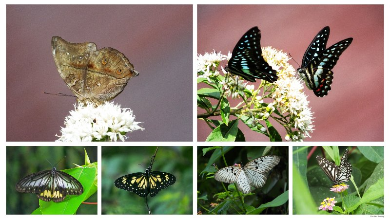
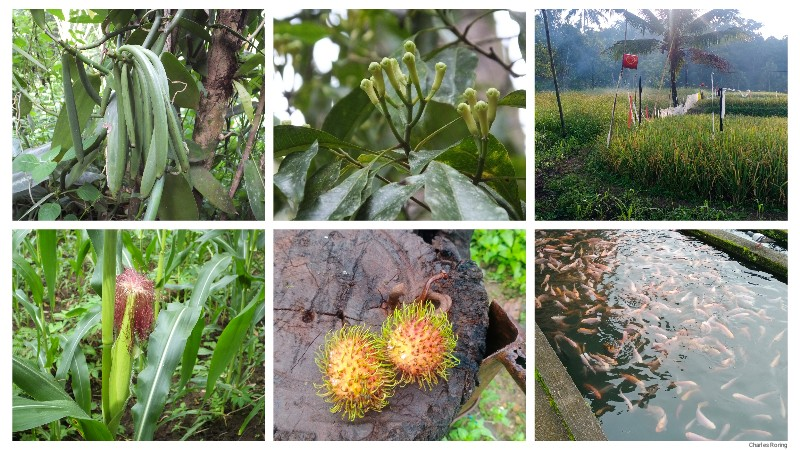

The highland of Minahasa in the province of North Sulawesi is a highly recommended destination for birdwatching and wildlife watching. It is the habitat of a lot of species of tropical birds such as Pale Blue Monarch, Sulawesi Cuckoo Dove, Black-naped Oriole, Sahul Sunbird, Gray-sided Flowerpecker, Yellow-sided Flowerpecker, Crimson Sunbird, Black-crowned White-eye and a lot more.

Birdwatching Sites in Minahasa Highland
There are a lot of birdwatching sites which tourists can explore. Mount Mahawu near Tomohon town is the first choice and can be reached by motorized vehicle in around 20 minutes. There is parking lot that can accommodate cars and motorcycles. There is stair with railing that connects the car park with the top of Mount Mahawu. The crater of Mount Mahawu is often covered by fog early in the morning. There are a lot of birds the forest along the slope of Mount Mahawu. Visitors could watch them using binoculars or spotting scope.

There are Sulawesi Myzomela, Sulawesi Cuckoo Dove, White-faced Cuckoo Dove, Red-eared Fruit Dove, Yellow-billed Malkoha, Isabelline Bush-hen, Sulphur-bellied Whistler, Citrine Canary-Flycatcher, Mountain Tailorbird, Turquoise Flycatcher and etc.
Birdwatchers have to be aware that Mount Mahawu is a popular tourist destination both for domestic and foreign visitors. So, there will be cars and motorcycles that go up and down the road. Birders need to stand on the roadside to keep safe.

The next site for finding high elevation forest birds is Mount Lengkoan in the east of the District Town of Sonder. Crimson Sunbird, Mountain White-eye, Yellow-sided Flowerpecker, Sulawesi Blue Flycatcher, Black-faced Munia, Sulawesi Pygmy Woodpecker, Sulawesi Drongo, and etc. are some of the birds that visitors could watch especially in the mornings and late afternoons.

Very few cars and motorcycles go up and down the slope of Mount Lengkoan so, it is relatively safe for tourists to watch and photograph birds in this forest. The lower part of Mount Lengkoan is covered by various kinds of agricultural crops such as clove trees and vegetables.
Sonder forest is a small forest that is located in the slope of Tounelet village. Visitors can watch birds from the slope near GMIM's Siloam Hospital to look for: Black-crowned White-eye, Pale Blue Monarch, Sooty-headed Bulbul, Slender-billed Crow, Chestnut Munia, Scaly-breasted Munia, Sahul Sunbird, Black-naped Oriole, Glossy Switflet, Barn Swallow, Grey-cheeked Green Pigeon, Yellow-sided Flowerpecker, Gray-sided Flowerpecker, Brush Cuckoo, White-eyed Drongo, Sulawesi Hanging Parrot, Eurasian Treesparrow, and etc.
The road at the slope of Tounelet is quite busy especially in the morning and during the day. Birders need to stand at the pedestrian path. Birding here can be done easily because visitors can walk along the roadside.

Easy Birding Walk
The district town of Sonder has got birding sites that can easily be explored on foot. Visitors could watch birds by walking along the paved and concrete road that is built to provide access for farmers to their farmlands. The recommended sites include Lalek Forest and Talikuran Paddy Fields, Koneran Road, Rambunan Sawangan and Rambunan Pinaras Road. Birds that could be watched in this area include: White-breasted Woodswallow, Collared Kingfisher, Cattle Egret, Little Egret, Eastern Yellow Wagtail, Finch-billed Myna, Zebra Dove, Scaly-breasted Munia, Cinnamon Bittern, White-browed Crake, and a lot more.
Butterfly-watching in Minahasa Highland
The agricultural land of Minahasa is a highly recommended site for butterflywatching. There are The Common Birdwing (Troides helena), Blanchard's Ghost (Idea blanchardii), Blanchard's Wood Nymph (Ideopsis vitrea), Sulawesi Leafwing Butterfly (Doleschalia polibete celebensis), Sacred Tabby (Pseudergolis avesta), Gigon Swallowtail (Papilio gigon), Lime Swallowtail (Papilio demoleus), Meyer's Jay (Graphium meyeri), The Clipper (Parthenos sylvia), and etc.

The sites for butterfly watching are just the same for birdwatching. More butterflies could be seen near water. So, Sonder town that has got abundant water stream is the perfect destination.
Agriculture in Minahasa
Minahasa is an important agricultural center in eastern region of Indonesia. It supplies beans, vegetables, fruits, spices, and other agricultural commodities to Manado city, and a lot of cities, towns and villagers throughout Indonesia. Its produce include rice, kidney bean, peanut, cabbage, carrot, spinach, onion, spring onion, kangkung, chilli, nutmeg mace, papaya, banana, rambutan, coconut, vanilla, nutmeg mace, palm sugar, fish, meat, pork, eggs, chicken meat, and etc.
During the tour, visitors will be able to see this beautiful landscape of agricultural land of Minahasa.
Booking
If you are interested in taking a trip in Minahasa highland for walking tour, sightseeing, birdwatching and butterfly watching, and want me to organize your trip, please, contact me by email to: peace4wp@gmail.com or by whatsapp to: +6281332245180.

Also read:
- Minahasa Highland Tour
- Hiking Tour in Minahasa Highland
- Manado City Tours
- Birdwatching in Sonder town of Minahasa
- Holiday in the Highland of Minahasa
- Birdwatching in Sulawesi Island of Indonesia
- Traveling in North Sulawesi
- Birding in Minahasa
Birding in Tambrauw Mountains
Tambrauw is a regency between Sorong and Manokwari. Most of its territory consists of mountains, and valleys with pristine tropical rainforest covers most of the land. Very few people know that Tambrauw is a great site for nature tourism. The coastal area in the north of Tambrauw have got rivers that tourists can explore to see the wealth of tropical avifauna of New Guinea. I have organized numerous hiking, camping, and birding tours to the coastal and mountaineous regions of Tambrauw regency for visitors who came from the Belgium, United States, France, Germany, Luxembourg, Czech, the Netherlands, and Poland. They spent between 4 days to 1 week in the forest and at the beach of the regency.
I personally have visited the interior region, beach area and rivers of Tambrauw to do birding and wildlife watching. The first time I went there was when I guided two Belgian tourists. We watched Sulphur Crested Cockatoo, Pinon Imperial Pigeon, Pink-spotted Fruit Dove, Black Fantail, Blyth's Hornbill, Yellow-faced Myna, Palm Cockatoo, and Lesser Birds of Paradise.
Tambrauw Mountains are located in the bird's head or Vogelkop region of West Papua. It is a great destination for tourists who like birdwatching. There are a lot of birding sites in Tambrauw. Some places that can easily be explored by birdwatchers include Syugrar river, Fef, Mount Sakofsiah and Ases Valley, as well as Ayapokiar. To visit these places, tourists need to fly from their country to Jakarta - the capital of Indonesia. After that, they can continue their trip by taking a domestic flight to Sorong city. I could meet them at the airport and organize the transfer by car or by plane to Tambrauw. Birds that can be seen in these forests are the ones that live in lowland and lower montane forests such as Lowland and Highland Peltops, New Guinea Vulturine Parrot, Hooded Pitta, Lesser Birds of Paradise, Magnificent Birds of Paradise, Sacred Kingfisher, Scrub Meliphaga, Palm Cockatoo, Oriental Dollarbird, Grey Crow, Streaked-headed Mannikin, andetc. Bringing a good pair of binoculars, spotting scope and field guide book: Birds of New Guinea written by Thane K. Pratt and Bruce Beehler will enhance the birding experience of every bird watchers.
Because there is no guesthouse in the forest, we can build tents at the bank of the river and enjoy hiking, swimming, birding, and wildlife watching. From my previous trips, I saw various species tropical birds such as Lesser Birds of Paradise, Magnificent Riflebird, King Bird of Paradise, Palm Cockatoo, Yellow-faced Myna, Pinon Imperial Pigeon, Grey Crow, Black-capped Lory, Little Egret, Rainbow Lorikeet, Torrent Flycatcher, and Golden Myna.
Accommodation
The most recommended destination for birdwatching is Fef town which is the capital of Tambrauw regency. There are rooms in the guesthouse that is run by the Catholic church in the town. Local guide - Nico Nauw - can arrange the accommodation for you.
If you are interested in taking a birdwatching trip to the forest around Fef town of Tambrauw regency and want a guide to organize your tour, please, contact local guide Charles Roring by whatsapp to: +62 81332245180.